Reconstructing the Prokudin-Gorskii collection through channel alignment, exhaustive search and coarse-to-fine image pyramids.
James Xie · University of Waterloo · Fall 2026
18 + 2Provided + additional plates
6High-resolution input scans
2.74 sSlowest provided alignment
Handwritten NCC pyramid · original scan processed at 3741 × 9715
01 / Method
Recover the alignment, then recover the color.
The inputs are grayscale scans containing three vertically stacked exposures in blue, green and red order. The program divides each scan into three equal-height arrays, discards at most two trailing rows, keeps blue fixed and translates green and red. The final channel order is red, green, blue.
Stacked B / G / R→Split & normalize→Estimate G / R shifts→Compose RGB
Single-scale search
For each moving channel, try all 961 integer shifts in a ±15-pixel window. Compare a fixed interior region of blue against the shifted channel. Exclude a 12% scoring border on every side, expanding the exclusion when needed to keep every tested coordinate in bounds.
All candidates at a level use exactly the same reference pixels. This avoids favoring shifts that compare a smaller overlap or introduce wraparound.
Two baseline metrics
L2 = √Σ(B − Cshifted)²
Choose the smallest distance. L2 is sensitive to differences in brightness across color filters.
NCC = Σ(B · Cshifted) / (‖B‖ ‖Cshifted‖)
Choose the largest similarity. This is the normalized dot product in the handout, without mean subtraction. It compensates for multiplicative intensity changes, but not arbitrary color-dependent changes.
Convert unsigned integer pixels to floating point using their dtype range. Use Pillow only for reading, writing and resizing; NumPy performs the manual search and array operations. No automatic registration or pyramid-building library is used.
02 / Single-scale experiments
Start small. Make each step visible.
Every provided plate receives a low-resolution experiment using channels resized to 320 pixels wide. Both L2 and NCC run on the same pixels and search window. The three examples below show the separated exposures, unaligned composite and two aligned composites. Offsets here are in low-resolution pixels.
Detailed experiment 01
00056v.jpg
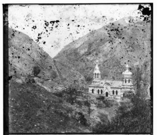
B channel
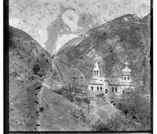
G channel
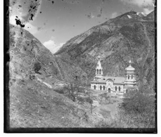
R channel
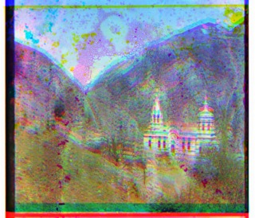
Unaligned RGBSingle-scale L2
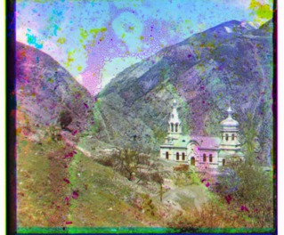
Single-scale NCC
Low-resolution shifts: G (1, 4) · R (0, 10); same for L2 and NCC.
The church and hillside become much easier to read after registration. The colored speckles remain: the separate source exposures contain different scratches and blotches. A translation cannot restore missing emulsion.
Detailed experiment 02
00125v.jpg
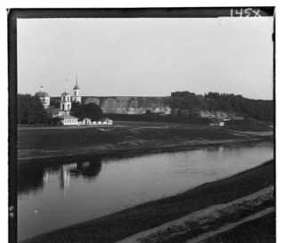
B channel
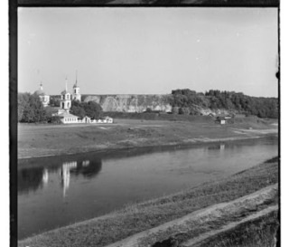
G channel
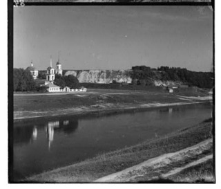
R channel
Unaligned RGBSingle-scale L2
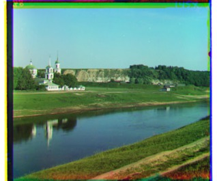
Single-scale NCC
Low-resolution shifts: G (2, 4) · R (1, 8); same for L2 and NCC.
The skyline, church and riverbank provide stable geometric structure. The two metrics select the same shifts at this reduced resolution. Narrow colored bands remain near the original plate edges.
Detailed experiment 03
00163v.jpg
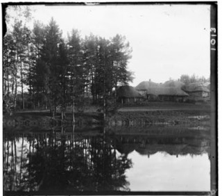
B channel
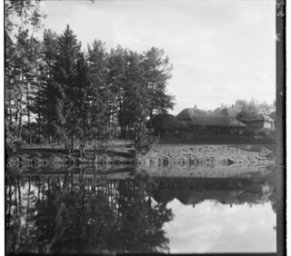
G channel
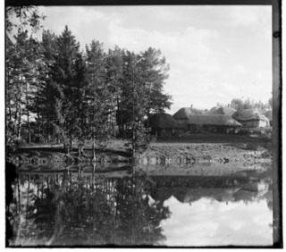
R channel
Unaligned RGB
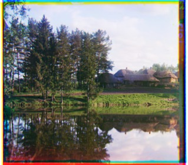
Single-scale L2Single-scale NCC
Low-resolution shifts: G (1, -2) · R (1, -3); same for L2 and NCC.
Tree trunks and roof lines provide alignment cues. The negative vertical shifts are valid: these channels must move upward relative to blue. The two metrics again select the same low-resolution shifts.
All low-resolution experiments
Each shift cell lists G first, then R. Times are NCC / L2 in seconds. Plate numbers map to the labeled results below.
Explicitly build a list of progressively smaller images using bilinear downsampling by about two. Stop when the shorter channel dimension is at most 160 pixels. At the smallest level, search ±15 pixels. At each finer level, multiply the estimate by the actual width/height ratios, round to integer pixels and refine within ±2 pixels. Using actual ratios handles odd image sizes.
All 18 provided scans are processed at their original resolution. The same NCC metric and parameters apply to every image; no per-image tuning is used. A finer level tests only 25 candidates per moving channel, instead of exhaustively searching for shifts exceeding 100 pixels at full size.
A pyramid in motion
Intermediate estimates for 00458u.jpg; offsets are measured in pixels of the indicated level.
Channel size
G shift
R shift
Search radius
117 × 102
(0, 1)
(1, 3)
±15
234 × 203
(0, 3)
(2, 6)
±2
468 × 405
(1, 5)
(4, 11)
±2
936 × 810
(1, 11)
(8, 22)
±2
1871 × 1619
(3, 21)
(16, 44)
±2
3741 × 3238
(6, 43)
(32, 87)
±2
Output cropping removes only pixels without support in all three shifted channels. This is a geometric validity crop, not automatic detection of the original photographic borders; colored plate borders therefore remain visible.
Original-resolution offsets and runtime
Shifts are (x, y), positive right/down, applied to G and R relative to B. Timing covers both channel alignments, including pyramid construction, but excludes loading, compositing and image saving. Median: 0.089 s; range: 0.078–2.741 s on this Windows environment. No full-resolution brute-force timing comparison was performed.
Each pair shows the unaligned composite and the NCC pyramid result. Click an aligned image to open the saved result at original pixel scale, after the common-support crop. Web previews are at most 900 pixels wide.
G (0, 8) · R (0, 13) · applied at original resolution
05 / Additional collection examples
Beyond the supplied dataset.
Two additional three-frame grayscale JPEGs were downloaded from the Library of Congress, rather than using its finished color restorations. Both use exactly the same pipeline and parameters as the provided set. These examples are low-resolution scans; the large-image demonstration comes from the six supplied high-resolution scans.
Visual assessment: the reconstructed previews show broadly aligned scene structure. This is a qualitative inspection, not a ground-truth accuracy score. The saved high-resolution outputs remain available for closer inspection.
Damaged exposures: the first detailed experiment has visible scratches and blotches in its individual grayscale channels. Their disagreement produces colored speckles after composition. Searching for a different global displacement cannot reconstruct these missing details.
Local residuals: faces, foliage and object boundaries can retain colored fringes. Motion between sequential exposures, channel-dependent brightness and departures from pure translation are plausible causes; the current experiment does not isolate their individual contributions. The model cannot correct local motion, rotation or scale change.
Border artifacts: excluding borders from the score prevents them dominating the alignment, but does not restore or remove the physical borders in the final image. The common-support crop only removes wrapped pixels.
Optional extensions: edge-based alignment, detected-border cropping, white balance and contrast enhancement are not implemented in this baseline submission. Keeping the original intensities makes the L2/NCC results and remaining defects transparent.
Dataset discrepancy: the handout mentions both 5 and 20 examples and legacy image names; the supplied directory contains 18 numbered JPEGs. All 18 were processed, and three selected plates receive detailed experiments.
07 / Reproducibility
Measurements, code & sources.
Seven synthetic-image unit tests cover channel order, 16-bit normalization, L2/NCC shift recovery, large displacements on odd dimensions, RGB composition, valid-support cropping, blank-image tie handling and invalid inputs. No mock tests are used.
Run instructions are in the project README. Saved records include input SHA-256 hashes, channel dimensions, discarded rows, offsets, per-level scores and timings. NCC/L2 scores at different pyramid levels use different pixels and should not be interpreted as one comparable accuracy curve.
Environment: Python 3.13.5, NumPy 2.3.3, Pillow 11.1.0. Measurements were collected with one sequential batch, not a statistical performance benchmark.
Source images: Prokudin-Gorskii photograph collection, Library of Congress, Prints and Photographs Division. See the linked official records above and the collection overview. Assignment requirements: local SYDE671 Assignment 1 handout, Part Two.